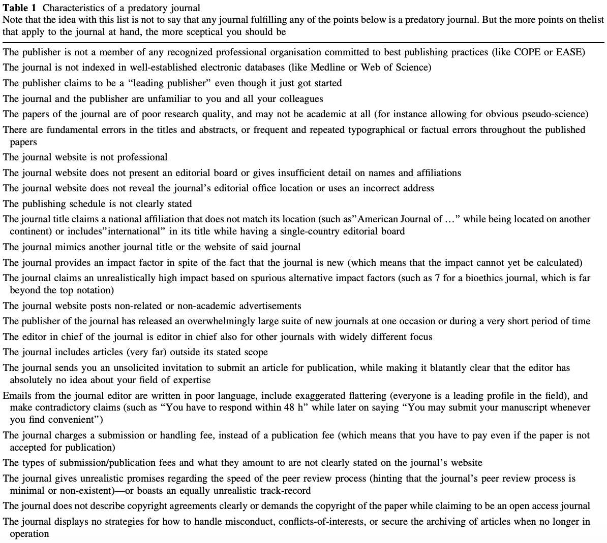
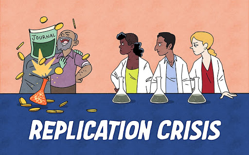

Examining problems with modern-day science and academia as a whole. Some are more severe than others, they are not in any particular order, nor is the list comprehensive.
an exploitive academic publishing business model that involves charging publication fees to authors without checking articles for quality and legitimacy and without providing the other editorial and publishing services that legitimate academic journals provide, whether open access or not
In plain English, any Joe Schmoe can submit his revelatory paper that sets a new high score on the Crackpot Index to these journals—provided he can pay the author's fee (which doesn't guarantee publication) and fill out the forms—and get accepted. The quality of science is of no matter, the money is.
Another definition is given in the Nature paper, Predatory journals: no definition, no defence :
Predatory journals and publishers are entities that prioritize self-interest at the expense of scholarship and are characterized by false or misleading information, deviation from best editorial and publication practices, a lack of transparency, and/or the use of aggressive and indiscriminate solicitation practices
The journal (read: predator) preys on the researcher who is desperate to get his paper published and another entry on his CV. This process can easily propagate and lead to worse science:
What makes a journal predatory? Some researchers and organizations have published typical characteristics of predatory journals.
Jeffrey Beall put out his own list in his short article Criteria for Determining Predatory Open-Access Publishers. Among these are obvious characteristics:
- The journal does not identify a formal editorial / review board.
- Evidence exists showing that the editor and/or review board members do not possess academic expertise to reasonably qualify them to be publication gatekeepers in the journal's field.
- Copy-proofs (locks) their PDFs, thus making it harder to check for plagiarism.
- The publisher dedicates insufficient resources to preventing and eliminating author misconduct, to the extent that the journal or journals suffer from repeated cases of plagiarism, self-plagiarism, image manipulation, and the like.
- Use boastful language claiming to be a "leading publisher" even though the publisher may only be a startup or a novice organization.
And non-obvious:
- There is little or no geographical diversity among the editorial board members, especially for journals that claim to be international in scope or coverage.
- The publisher asks the corresponding author for suggested reviewers and the publisher subsequently uses the suggested reviewers without sufficiently vetting their qualifications or authenticity. (This protocol also may allow authors to create faux online identities in order to review their own papers).
- Operate in a Western country chiefly for the purpose of functioning as a vanity press for scholars in a developing country (e.g., utilizing a maildrop address or PO box address in the United States, while actually operating from a developing country).
Another list was published by Eriksson and Helgesson in their 2016 paper The false academy: predatory publishing in science and bioethics. Their 25 characteristics are seen below:
Combining these two lists and removing the minor entries, the primary items are:
Note the comment on the table above: these characteristics alone don't immediately qualify a journal as predatory, although some characteristics are much more suspect than others.

The first incident was created by Alan Sokal, who submitted his paper Transgressing the Boundaries: Towards a Transformative Hermeneutics of Quantum Gravity, in which he argues that
It has thus become increasingly apparent that physical ``reality'', no less than social ``reality'', is at bottom a social and linguistic construct; that scientific ``knowledge", far from being objective, reflects and encodes the dominant ideologies and power relations of the culture that produced it; that the truth claims of science are inherently theory-laden and self-referential; and consequently, that the discourse of the scientific community, for all its undeniable value, cannot assert a privileged epistemological status with respect to counter-hegemonic narratives emanating from dissident or marginalized communities.
To a layperson (which seems to include the journal's editor, if he even looked at it), there is no telling that the paper is absolute nonsense: the grammar and terminology are complex and the science in which he speaks of is foreign to common ears.
Arguably the most famous incident regarding predatory journals is John Bohannon's work discussed in his paper, Who's Afraid of Peer Review? (Wikipedia). The papers submitted and data can be found here.
Bohannon submitted a bogus paper to "304 open-access publishers: 167 from the DOAJ, 121 from Beall’s list, and 16 that were listed by both", where the paper was designed using the following process:
Molecule X from lichen species Y inhibits the growth of cancer cell Z. To substitute for those variables, I created a database of molecules, lichens, and cancer cell lines and wrote a computer program to generate hundreds of unique papers. Other than those differences, the scientific content of each paper is identical.
The fictitious authors are affiliated with fictitious African institutions. I generated the authors, such as Ocorrafoo M. L. Cobange, by randomly permuting African first and last names harvested from online databases, and then randomly adding middle initials. For the affiliations, such as the Wassee Institute of Medicine, I randomly combined Swahili words and African names with generic institutional words and African capital cities.
The graph’s caption claims that it shows a “dose-dependent” effect on cell growth—the paper’s linchpin result—but the data clearly show the opposite. The molecule is tested across a staggering five orders of magnitude of concentrations, all the way down to picomolar levels. And yet, the effect on the cells is modest and identical at every concentration.
[In the second experiment,] the control cells were not exposed to any radiation at all. So the observed “interactive effect” is nothing more than the standard inhibition of cell growth by radiation. Indeed, it would be impossible to conclude anything from this experiment.
To ensure that the papers were both fatally fl awed and credible submissions, two independent groups of molecular biologists at Harvard University volunteered to be virtual peer reviewers...I translated the paper into French with Google Translate, and then translated the result back into English. After correcting the worst mistranslations, the result was a grammatically correct paper with the idiom of a non-native speaker...The researchers also helped me fine-tune the scientific flaws so that they were both obvious and “boringly bad.”
[In the closing statement, Bohannon (as Cobange) states that] “In the next step, we will prove that molecule X is effective against cancer in animal and human. We conclude that molecule X is a promising new drug for the combined-modality treatment of cancer.” If the scientific errors aren’t motivation enough to reject the paper, its apparent advocacy of bypassing clinical trials certainly should be.
The results were astonishing, but not really:
157 of the journals had accepted the paper and 98 had rejected it. Of the remaining 49 journals, 29 seem to be derelict: websites abandoned by their creators.
Of the 255 papers that underwent the entire editing process to acceptance or rejection, about 60% of the fi nal decisions occurred with no sign of peer review.
Of the 106 journals that discernibly performed any review, 70% ultimately accepted the paper. Most reviews focused exclusively on the paper’s layout, formatting, and language. This sting did not waste the time of many legitimate peer reviewers. Only 36 of the 304 submissions generated review comments recognizing any of the paper’s scientific problems. And 16 of those papers were accepted by the editors despite the damning reviews.
For the publishers on [Beall's] list that completed the review process, 82% accepted the paper.
About one-third of the journals targeted in this sting are based in India...making it the world’s largest base for open-access publishing; and among the India-based journals in my sample, 64 accepted the fatally fl awed papers and only 15 rejected it...The United States is the next largest base, with 29 acceptances and 26 rejections.
Journals published by Elsevier, Wolters Kluwer, and Sage all accepted my bogus paper.
Some journals were shut down and apologized for, while others rejected communication and are still operating today.
The other big incident (ongoing, rather) in predatory journal history is that of SCIgen (GitHub, website), a program created and developed by MIT researchers to "maximize amusement, rather than coherence" and "auto-generate submissions to conferences that you suspect might have very low submission standards".
As expected, this program is ripe for abuse by those who lack the intelligence and drive to perform their own novel research, but still want that sweet, sweet line on their CV and a talking point with women at bars. Like in 2014, more than 120 computer-generated papers were redacted from journals published by the powerhouses Institute of Electrical and Electronic Engineers (IEEE) and Springer. Soon thereafter, Springer collaborated with the French researcher who discovered the phony papers, Cyril Labbé, to create SciDetect (website), a program to detect computer-generated papers.
Predatory conferences are similar to journals, just in conference format. The SCIgen team brought these to light in 2005 with their paper Rooter: A Methodology for the Typical Unification of Access Points and Redundancy being accepted.
Despite this blog's lack of readership, it never hurts to name and shame these journals more than they already are, which will never be enough! It's important to note that not all of these journals are truly predatory.
One of the principle questions in the scientific community is "should knowledge be free?". After all, us taxpayers fund a lot of research through grants, so shouldn't we get to have access to the final results? This is what the open access movement is about: literature being "digital, online, free of charge, and free of most copyright and licensing restrictions" (see following sentence for source). Peter Suber provides an excellent overview, brief introduction, and book on open access.
The most common association to the open access movement is Sci-Hub, a website that hosts millions of paywalled papers and book. Content is sourced from login credentials sold or donated to Sci-Hub, which are then used to scrape databases for papers. More than 84.2 million papers have been downloaded (23 October 2020) and I... I mean, people that I have heard of, rarely fail in finding papers they were looking for.
Unsurprisingly, large publishers like Elsevier and Springer are unhappy at Sci-Hub's efforts, causing Elbakyan to go into hiding and the website to change domains regularly.
Deeply unappreciated fact: the most "impactful" person in science right now is this Kazakhstani hacker queen. She is the one-woman bridge to the largest repository of scientific knowledge ever collected. pic.twitter.com/COvqFfb251
— Rohan Naidu (@Rohan_Naidu) August 24, 2020
The Sci-Hub effect is evident:
Using data from 12 leading journals in economics, consumer research, neuroscience, and multidisciplinary research, we found that articles downloaded from Sci-hub were cited 1.72 times more than papers not downloaded from Sci-hub and that the number of downloads from Sci-hub was a robust predictor of future citations.
This is an obvious benefit to science. More accessibility → more knowledge → more publications → more knowledge → ... → and so on.
Publish or perish creates a dangerous cycle for science, its institutions, and its practitioners.
A typical assistant professor at a research-focused U.S. university is hired on tenure track with a review at 5-7 years. The review consists of committees at multiple levels (department, college, university) who examine their publications, teaching reviews, and other activities, with publications being a majority of the consideration. Despite what they tout, universities' primary focus is research and the money that comes with it, not teaching.
In an effort to improve their likelihood for achieving tenure, professors are indirectly encouraged to publish more. But because of human limitations, meaningful publications (at least in STEM fields) take many months, if not years, to fully complete—precious time that the professors just do not have available. But what if they changed up their methods just a bit to help themselves out? There are a few unethical practices some engage in to boost their publication record:
This behavior doesn't necessarily begin at the professor-level. To even be considered for a professorship, one's publication record needs to be outstanding, leading to the aforementioned unethical practices. There are hundreds of applicants gunning for a single professorship, meaning every publication and impact factor counts.
Pride is the other part of this problem. I've seen professors beam as they bragged to the class about their citation numbers and graduate students scowl when asked about the number of papers they've published. To an extent, it is a measure of how good of a researcher you are: if you put out multiple papers in one year that all get accepted to high impact factor journals, odds are you're a solid researcher. On the other hand, not putting out a single paper in a year or multiple doesn't necessarily mean you're worthless, as other factors could be playing a role.
A variant of the Matthew effect (rich get richer, poor get poorer) also exists in academia. Take two professors who are in the same field: one has tens to hundreds of papers and thousands of citations, while the other has a few tens of papers and a few hundred citations. Who is more likely to be seen by researchers on sites like Google Scholar? Whose name is more likely to be recognized? Who is more likely to be awarded a grant? The former by far. Their reliability and quality of work is proven by their track record. This makes it incredibly difficult for non-established researchers to "get big" in their field, as their papers rarely make it to the front page of search results. (Ben Trettel and I had a nice email exchange about this that can be found here.)
So, what is the solution to this? While I am completely in the dark about the review practices for tenure and hiring of assistant professors, it is important that the quality of their work is also taken into account. As a rather prominent scientist once told me, in order to perform an impactful cancer study, it would take 10+ years and hundreds of millions of dollars, both of which the funder and funded aren't patient enough for. Instead, work like this—quality science, patient with results—should be encouraged more often.
Further, the lack of patience and need for instant gratification in the form of results may point towards a fundamental misunderstanding of how science works. Science is not a straight path from inception to experiments to results. There are obstacles, steps (sometimes leaps) backwards, dead ends, misinterpretations, false negatives and positives, and a host of other issues that one may encounter on their way to the truth. Rushing through the process can—and often will—lead to poor or even false results.
One of the key tenets of science is its reproducibility. In order for an experiment's results to be legitimate, the experiment itself should be able to be reproduced elsewhere and produce identical, or at least similar, results. And yet, a large amount of studies aren't reproducible and provide false positives.
Before continuing, it's important to note that reproducible ≠ replicable. Plesser makes this clear in his Reproducibility vs. Replicability: A Brief History of a Confused Terminology by giving a few different definitions for each as coined by different organizations or individuals.
The Association for Computering Machinery (ACM) defines them as the following:
Reproducibility (Different team, different experimental setup): The measurement can be obtained with stated precision by a different team, a different measuring system, in a different location on multiple trials. For computational experiments, this means that an independent group can obtain the same result using artifacts which they develop completely independently.
Replicability (Different team, same experimental setup): The measurement can be obtained with stated precision by a different team using the same measurement procedure, the same measuring system, under the same operating conditions, in the same or a different location on multiple trials. For computational experiments, this means that an independent group can obtain the same result using the author’s own artifacts.
The American Statistical Society has also proposed definitions in their Recommendations to Funding Agencies for Supporting Reproducible Research:
Reproducibility: A study is reproducible if you can take the original data and the computer code used to analyze the data and reproduce all of the numerical findings from the study.
Replicability: This is the act of repeating an entire study, independently of the original investigator without the use of original data (but generally using the same methods).
For the sake of simplicity, I will use versions of reproducible (reproducible, reproducibility, reproduction, etc), meaning the study's experiments can be performed in the same manner and the same data and conclusions will result.
So, how bad is the lack of reproducibility? Pretty bad. A few excerpts 2016 survey of 1,576 researchers sponsored by Nature (direct quotes are unbracketed, my words are bracketed):
[90% said yes, there is a reproducibility crisis.]
[85/60% and 75/60% of chemistry and biology scientists, respectively, have failed at reproducing someone else's/their own experiment.]
More than 60% of respondents said that each of two factors — pressure to publish and selective reporting — always or often contributed. [This ties directly back to publish or perish.]
There are a few ways to combat the reproducibility issue.
Providing a hypothesis and experimental methods before running the experiment and analyzing the data is important: it prevents the researcher from changing methods halfway through to get "better" results or p-hacking, in which the researcher finds results in the data that aren't truly there (false positives). Example preregistration documents can be found on Open Science Framework's Wiki. Feynman puts this idea well:
First, we guess it. Then we compute the consequences of the guess and see what it would imply. And then we compare the computation results to experiments and experience to see if it works. If it disagrees with experiments, it's wrong. And that simple statement is the key to science. It doesn't make a difference how beautiful your guess it, it doesn't make a difference how smart you are, who made the guess, or what his name is.
It's important to remember that even negative results are good. Showing something doesn't work is just the negative of showing that something does and still contributes to scientific knowledge, way more than false positives ever will (they contribute negatively!).
Reproducing already-published studies is not glamorous or even remotely encouraged by most researchers. The research is not novel, it requires less ingenuity than novel work, is arguably less fun than venturing into the unknown depths of experiments, and more difficult to publish (see why this point is especially important by looking at the publish or perish section—replication could ruin someone's career!). But it's important, much more than it's given credit for.
Encouraging reproduction and making it more prestigious is important in the process of improving both science and academia. But how to do this? I propose a few ways:
as a condition of receiving their Ph.D. from any accredited institution, graduate students in psychology should be required to conduct, write up, and submit for publication a high-quality replication attempt of at least one key finding from the literature, focusing on the area of their doctoral research.This method is beneficial in a couple of ways:
if it were a requirement of every accredited Ph.D. program, then no single graduate student could be at a disadvantage for conducting replications compared against her peers in other programs.This can be approximately quantified. The National Science Foundation (NSF) publishes a list detailing doctorate recipients for the past year. In 2018, 55,195 doctorates were awarded in the U.S. As grouped by relevant fields (not including "Humanities and arts" nor "Other [other non-science and engineering fields not shown separately]"):
| Field | Degrees Awarded |
|---|---|
| Life sciences | 12,780 |
| Physical sciences | 6,335 |
| Mathematics and computer | 4,030 |
| Psychology and social sciences | 8,899 |
| Engineering | 10,183 |
| Total | 42,227 |
I was not able to find any information about the the amount of reproduced studies published each year. Regardless, this would result in at most around 40,000 new reproductions, which is likely significantly more than the amount currently published.
First, a short introduction to p-values. In an experiment, two hypotheses are proposed: the null hypothesis and alternative hypothesis. The null hypothesis is generally goes something like "there is no effect between these two variables", while the alternative hypothesis is "there is possibly an effect between these two samples". After an experiment has taken place and the data analyzed, the experimenters can choose one of two options based on the level of statistical significance, or p-value: reject the null hypothesis or fail to reject the null hypothesis. There is no such thing as accepting the null hypothesis, and if you see a textbook or text saying this, stop reading it and find something else to read.
The p-value is defined as:
probability of obtaining results at least as extreme as the observed results of a statistical hypothesis test, assuming that the null hypothesis is correct.
In layman terms, it's the probability that the results could have occurred by sheer randomness. So with a p-values of 0.5, 0.05, 0.005, and 0.001, the results occur by chance 1/2 times, 5/100 times, 5/1000 times, and 1/1000 times—the smaller the p-value, the more statistically significant (or less likely the results are false positives by chance). Calculating p-values by hand is a bit difficult, so software is often used.
More information can be found here.
As of now (25 October 2020), the standard for statistically significant is p < 0.05, meaning 5 out of 100 studies with p < 0.05 being statistically significant have false positive results. Plenty of others find this experimentally significant (in a negative way): in the 2017 paper Redefine statistical significance, over 50 scientists provide their rationale for decreasing the accepted p-value across science.
It's not the norm to share raw data and analyses from experiments. The final results are often the only data-related information included in studies. Occasionally a separate file includes an appendix with all relevant data that makes reproduction a bit easier. Being transparent with the data allows comparison at every step of the experiment, not just the end.
Open Science Framework is leading the charge for this by allowing study designs and data to be stored on their servers or connected with the reseacher's personal file-sharing service. It doesn't even have to be OSF. Using a public Github repository or hosting it on a publicly-available Google Drive is still better than nothing and something researchers should implement as common practice.
As discussed in the publish or perish section, researchers go where the money is, and there isn't much going towards reproduction studies. There are very few opportunities available for funding, as seen below:
Outside of these three examples, little else was available on Google discussing funding for reproduction studies. Until funding is made available for replicating, it will continue to be unattractive and put on the back burner in favor of novel research.
P-hacking has a few other names, but means the same thing in the end: finding patterns in data that truly don't mean anything. Instead of hypothesizing before the data is collected and analyzed, the hypothesis is extracted post-processing.

One famous case of p-hacking involves former Cornell professor, Brian Wansink, and his posting The Grad Student Who Never Said "No", which culminated in 40 of his papers being retracted and his resignation.
He brings up a fair point in Addendum I:
P-hacking shouldn’t be confused with deep data dives – with figuring out why our results don’t look as perfect as we want. With field studies, hypotheses usually don’t “come out” on the first data run. But instead of dropping the study, a person contributes more to science by figuring out when the hypo worked and when it didn’t. This is Plan B. Perhaps your hypo worked during lunches but not dinners, or with small groups but not large groups. You don’t change your hypothesis, but you figure out where it worked and where it didn’t.
However, his so-called "deep data dive" requires intense scrutinization and reproduction after the fact—it should not include accepting the results and going straight to writing a paper. Instead, a new hypothesis should be formed and rigorously tested, more so than the initial experiment, and preferably by non-interested persons.
But how impactful is P-hacking, really? Head et al. checked this in their The Extent and Consequences of P-Hacking in Science, showing that:
while p-hacking is probably common, its effect seems to be weak relative to the real effect sizes being measured. This result suggests that p-hacking probably does not drastically alter scientific consensuses drawn from meta-analyses.
Peer review is the act of other scientists in similar fields reviewing the work of another. Scientist 1 submits a paper for peer review, scientists 2, ..., X review it independently, then approve it or ask for revisions. The number of scientists in the review panel can vary and they may not be in the exact same niche of the discipline. Peer review serves a few purposes, but mainly to double-check the submission's methods and conclusions.
Smith's Classical peer review: an empty gun states some issues with peer review:
Firstly, it is very expensive in terms of money and academic time. At the British Medical Journal we calculated that the direct cost of reviewing an article was, on average, something like £100 and the cost of an article that was published was much higher. These costs did not include the cost of the time of the reviewing academics, who were not paid by the journal. The Research Information Network has calculated that the global cost of peer review is £1.9 billion.
Secondly, peer review is slow. The process regularly takes months and sometimes years. Publication may then take many more months.
Thirdly, peer review is largely a lottery. Multiple studies have shown how if several authors are asked to review a paper, their agreement on whether it should be published is little higher than would be expected by chance.
A fourth problem with peer reviews is that it does not detect errors. At the British Medical Journal we took a 600 word study that we were about to publish and inserted eight errors. We then sent the paper to about 300 reviewers. The median number of errors spotted was two, and 20% of the reviewers did not spot any. We did further studies of deliberately inserting errors, some very major, and came up with similar results.
The first sentence's wording is poor and too strict. It does detect errors, just not all of them all of the time.
The fifth problem with pre-publication peer review is bias. ... Most authors from less prestigious institutions, particularly those in the developing world, believe that peer review is biased against them.
Citation is needed for this bold, but believable, claim. Smith cites Peters and Ceci's The Fate of published articles, submitted again, which provides proof of the existence of bias in the peer review process.
Perhaps one of the most important problems with peer review is bias against the truly original. Peer review might be described as a process where the ‘establishment’ decides what is important. Unsurprisingly, the establishment is poor at recognizing new ideas that overturn the old ideas.
González-Álvarez's Science in the 21st century: social, political, and economic issues provides a "list of thirty four Nobel Laureates whose awarded work was rejected by peer review." While it is unknown why these papers were rejected, it really doesn't matter: a robust process would have understood the importance of these discoveries.
Finally, peer review can be all too easily abused. Reviewers can steal ideas and present them as their own or produce an unjustly harsh review to block or at least slow down the publication of the ideas of a competitor.
While this is absolutely possible, especially when the reviewers are anonymous (thus you cannot check their future publications for plagiarism), there do not seem to be too many cases. A few examples: 1, 2, 3. Resnik et al.'s Perceptions of Ethical Problems with Scientific Journal Peer Review: An Exploratory Study found that out of 283 researchers, "9.6% (SE = 2.0%) stated that reviewers had delayed publication to publish a paper on the same topic" and "two of the most serious violations of peer review ethics, breach of confidentiality (6.8%, SE = 1.7%) and using ideas, data, or methods without permission (5%, SE = 1.5%) were perceived less often than the other problems."
Smith's proposal to fix peer review is outlandish:
For journal peer review the alternative is to publish everything and then let the world decide what is important. This is possible because of the internet, and Charles Leadbeater has illustrated how we have moved from a world of ‘filter then publish’ to one of ‘publish then filter’ and a world of ‘I think’ to one of ‘We think’. The problem with filtering before publishing, peer review, is that it is an ineffective, slow, expensive, biased, inefficient, anti-innovatory, and easily abused lottery: the important is just as likely to be filtered out as the unimportant. The sooner we can let the ‘real’ peer review of post-publication peer review get to work the better.
The sheer amount of noise becomes a problem. Is peer review so flawed and its fails so frequent and/or significant that it warrants the removal of the pre-publication process entirely? (Fail frequency can be defined in terms of both false positives (acceptance of a should-have-been-rejected paper) and false negatives (rejection of a should-have-been-accepeted paper). Significance is a bit more subjective and depends on field, but it's safe to say rejection of a Nobel Prize-winning work is significant.) Where is the line drawn that declares when peer review is a failure?
Smith's proposal has in the internet, and by extension, it's vast numbers of people. Instead of a committee of four reviewing a paper, the entire internet can judge for themselves. Smith states:
Fabio Casati puts it thus: ‘If you and I include this paper in our journals [our personal collections], we are giving it value...When this is done by hundreds of people like us, we’re using the selection power of the entire community to value the contribution. Interesting papers will rise above the noise.’ This is ‘we think’ rather than what a few arbitrarily selected reviewers think.
In my quest to find out the original source of the critical angle equation, I contacted a few professors, with one responding with:
This is the limitation of Google [my not being able to find the paper on Google Scholar]. It biases information toward newer already digitized data and leaves a vast history of amazing work out of reach.
This idea shows itself in other forms, such as research bounties. Gwern's Research Bounties On Fulltexts lists papers and books—older and newer (although not that new)—on a variety of topics he hasn't been able to find digitally. Ben Trettel's Scientific papers I haven't been able to find lists a mix of older and foreign papers of a similar nature.
So how many papers aren't on Google Scholar? I see no way to truly tell, but am happy to be proven wrong. One way to get an extremely rough approximation is to take the number of all-time published papers (with some practical lower date limit), then subtract whatever the size of Google Scholar is (around 160 million documents as of May 2014—I can't find a more recent estimate).
Some may claim that these older papers are useless, but not so fast (fun fact: this paper's first author, Alex Verstak, is the creator of Google Scholar):
First, the impact of older articles has grown substantially over 1990-2013. In 2013, 36% of citations were to articles that are at least 10 years old; this fraction has grown 28% since 1990. The fraction of older citations increased over 1990-2013 for 7 out of 9 broad areas and 231 out of 261 subject categories. Second, the increase over the second half (2002-2013) was double the increase in the first half (1990-2001). Third, the trend of a growing impact of older articles also holds for even older articles. In 2013, 21% of citations were to articles >= 15 years old with an increase of 30% since 1990 and 13% of citations were to articles >= 20 years old with an increase of 36%.
While 1990 isn't terribly old (24 years at the time of submission), they were still cited a not-insignificant amount of times despite being published in a less digital age.
In 2002, Google began scanning books, upgrading to automation that streamlined the process. As of August 2010, there were 129,864,880 books on Google Books. The same be done for non-digitized papers. Google Books currently (20 December 2020) partners with 11 universities and libraries, and while their collections are surely extensive, there is always room for more partnerships, more books, more knowledge.
As a useful sidenote, Ben Trettel provided excellent advice on finding obscure, old, and/or foreign papers:
You're right that it's a variant of the Matthew effect. As for how to find the missed papers, there are a variety of strategies. I'll give you a brain dump. I won't claim what I write below to be comprehensive (or interesting, or well written), but it's a start.
To find missed papers, one could start by doing deeper Google searches. Beyond going deeper in terms of the number of pages, trying a wider variety of keywords helps. I've long recognized that information is often "siloed" in different fields, so I've tried hard to identify fields adjacent to my own. I spent a fair amount of time examining the terminology in each field partly to understand what terms to search for as well, as different fields often use different terminology. You might have exhausted Google Scholar for a particular field's terminology, but have encountered little of the relevant papers in another field.
I've seen the saying "If isn't on Google, it doesn't exist" attributed to Jimmy Wales. Papers that aren't listed on Google "don't exist" in a practical sense. The UT libraries are slowly moving books from the libraries to off-site storage because people are checking books less (and also because off-site storage is cheaper and has better climate controls for book preservation). I imagine the reduction in book use is not exclusive to UT. Many great papers never made the transition online, so these papers are basically disappearing in a practical sense.
So how do you find items that never made the transition online? Following the citation trail is one classic approach. One article you have cites another that sounds interesting. You follows this back. Try collecting reviews, books, and bibliographies in your field and then scouring these for citations to anything that sounds interesting. I have over 150 reviews and books saved on the topic of my PhD! I particularly find foreign language reviews and books to be good sources of references to missed papers. I first heard about this series of 3 papers that I translated into English in an English translation of a major Russian book on the subject of my PhD.
An aside: This reminds of a question I made to check whether a scientific field is progressing: Can a good but unknown 50+ year old paper be published with minimal modifications today? If the answer is yes, that's not a good sign for scientific progress. Unfortunately I think each of the 3 papers I mentioned in the last paragraph are still publishable today, 82 years later. You'd have to add some newer data and maybe fancier figures, but the core of each paper is still publishable in principle.
Another particularly fruitful approach for me is to search Google Books. If I see that a particular page of a print-only journal has a keyword I find interesting, I'll check the journal at the library. This is slow, but I've found tons of great articles this way.
I had previously mentioned foreign language articles as unjustly ignored. I've found that doing Google searches in German and Russian to be worthwhile in my field. You can keep track of foreign language terminology where you keep track of the terminology in different fields. The language barrier does present a major obstacle, but I've written a Stack Exchange post about how to handle this. (A lot of what's on my list was found through methods described in the Stack Exchange post.)
Grey literature is also often not indexed on Google. You can find a lot of it through WorldCat, any number of bibliographic databases, or through the citation trail. Unfortunately grey literature can be particularly hard to locate, but it's a lot easier if you have access to a good ILL service. Related, if the grey literature is a US government report that's not publicly available, you might have some luck filing the right FOIA request.
Checking online bibliographic databases that aren't indexed on Google also can be quite useful. Late in my PhD I encountered Compendex and Inspec, which are licensed to various companies (ask your librarian about these and other bibliographic databases to be aware of). This lead to one of the last "rich veins" of literature I encountered on the subject of my PhD. I suspect now that I've at least touched most papers on the subject of my PhD, though I might mistakenly believe that a particular paper is irrelevant. (Recently I've realized that a particular oceanography paper is important to my research, despite encountering this paper in 2019 and apparently not thinking much of it.)
Various governments also have government-only bibliographic and report databases. I've had great luck filing FOIA requests to DTIC for "report bibliographies" for particular keywords. If you're interested, you should ask for U2 and UL citations at the very least. U2 is unclassified/unlimited, which is set for public release. UL is unclassified but has some sort of limitation, which is often copyright, so the government can't release the report but they can tell you of its existence. My personal experience is that currently classified reports don't contain information of interest to me, so I rarely ask for citations to classified reports.
Before bibliographic databases existed, there were review journals. After becoming familiar with some Russian terminology in my field, I checked hundreds of issues of Referativny Zhurnal: Mekhanika at UT. (I suspect that the library staff were amused by this as I had to request the books from storage, and I did this for months.) This is a Russian journal with abstracts of scientific papers. I was surprised to find not only good Russian articles that I missed, but also many English articles that I missed. I would scan the sections on the topics I was interested in for keywords that I recognized, take a photo of the abstract, and translate the titles later.
Also, it's worth noting that just because a paper is well-cited does not imply that it is well-read. An entire class of poorly-read but well-cited papers are "classic" papers written in languages other than English. These are rarely read, even if they're still relevant. I translated this paper into English and I'm somewhat amazed by how many downloads it has received. (Someone recently even asked me for permission to use a figure in the paper, when I translated the paper partly because I knew it was wrong and that figure should not be used. :-)
You probably get the impression that this is a lot of work. It is, but it's worthwhile when you consider how much it improves the quality of the science in my experience. Also, keep in mind that I'm not advocating that everyone does this. You start getting diminishing returns after more than a few people in a sub-field start doing this. Right now basically zero people go in-depth, so I think this is worthwhile to anyone interested.
You may also learn more about how to identify translations of scientific articles from him.
In this framework, a research finding is less likely to be true when the studies conducted in a field are smaller; when effect sizes are smaller; when there is a greater number and lesser preselection of tested relationships; where there is greater flexibility in designs, definitions, outcomes, and analytical modes; when there is greater financial and other interest and prejudice; and when more teams are involved in a scientific field in chase of statistical significance.